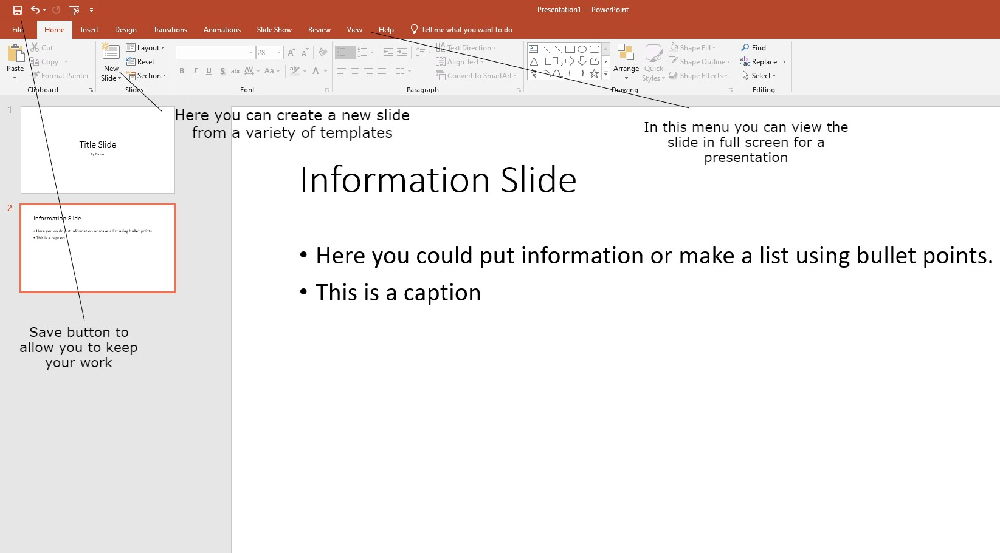

Microsoft PowerPoint is a popular presentation software program that is part of the Microsoft Office suite of productivity tools. It is used to create and deliver presentations, using a combination of text, images, audio, and video to convey information and ideas.
In a year 9 ICT class, students will typically be introduced to the basics of using PowerPoint. This will include learning how to create a new presentation, add text, images, and other media to slides, and format and arrange the elements on a slide.
One of the key features of PowerPoint is its ability to create and deliver professional-looking presentations. This includes using a range of tools and functions to add and format text, insert images and other media, and create transitions and animations to make the presentation more engaging and effective.
In addition to these core features, PowerPoint also offers a range of tools and functions that can help users create more advanced presentations. This includes using templates and themes to create a consistent look and feel for a presentation, as well as using the built-in design tools to create custom graphics and layouts.
Overall, PowerPoint is a powerful and versatile tool that is widely used in a variety of settings, including education, business, and marketing. By learning the basics of PowerPoint, students can develop important skills and knowledge that will be useful in their future careers.
Sources:
"Microsoft Powerpoint Basics." GCF LearnFree.
"Microsoft Powerpoint Basics for Beginners." HubSpot Academy.